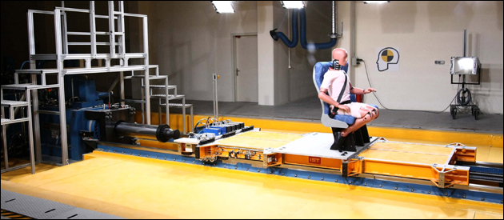

Yaklaþýk 2 bin 300 metre alana kurulan laboratuvarda, otomobil ile yük ve yolcu taþýyan tüm ticari araçlarda kullanýlan koltuk, emniyet kemeri, hava yastýðý ve bagaj kýsýtlayýcý sistemler için önden çarpma, arkadan çarpma ve whiplash (düþük hýzlarda arkadan çarpmalarda boyun incinmesi) konusunda testler yapýlabilecek.
Çarpma esnasýna oluþabilecek ivmelenmeler 0-10g aralýðýnda bu sistem ile simüle edilip toplanan veriler ile deðerlendirmeler yapýlmaktadýr.
Araþtýrma Geliþtirme için kullanýlacak bu sistem üzerine 2009 içerisinde belirli sertifikasyonlar alýnarak akredite bir laboratuvar haline getirilecektir...

Açýlýþýn ardýndan gerçekleþtirilen testte, özel dizayn edilmiþ bir mankenin oturtulduðu "test aracýna" yaklaþýk 16 km hýzla arkadan çarpýldý. Rektör Pof. Dr. Ahmet Acar, törende yaptýðý konuþmada, üniversitelerin araþtýrma misyonu çerçevesinde böyle bir laboratuvarý yaptýklarýný belirterek, ulusal sanayinin geliþimine katký saðlamak istediklerini söyledi.
ODTÜ BÝLTÝR Merkezi Baþkaný Prof. Dr. Mustafa Ýlhan Gökler de böyle bir laboratuvarýn Türkiye'de ilk defa kurulduðunu belirterek, Avrupa'da hiçbir ülkenin üniversitesinde böyle bir altyapýnýn olmadýðýný söyledi.
Ýlhan, Türkiye'ye böyle bir teknik altyapýyý kazandýrdýklarý için gurur duyduklarýný ifade ederek, þu bilgileri verdi:
"Bu projeyi otomotiv sektörü heyecanla bekliyordu. Türkiye'nin araþtýrma ve geliþtirme potansiyelini artýracak, teknoloji alanýnda önemli ilerlemeleri saðlayacak bir altyapý bu. Gelecek nesillere kalabilecek bir eser. Otomotiv sektörü Türkiye'nin öncü bir sektörü ve geçtiðimiz senelerde ihracat þampiyonu oldu. Devlet Planlama Teþkilatý da bu konuda bize çok ciddi bir destek saðlayarak, bu altyapýyý kurmamýzý saðladý. Bu bir baþlangýç, gittikçe geliþecek bir altyapý bu. Amacýmýz, bu alanda bir mükemmeliyet merkezi haline gelmek, Türkiye'de ve dünyada kazalarda sýfýr ölüme ulaþmak konusunda gerekli desteði ve altyapýyý saðlamak."
Ýlhan, Türkiye'deki otomobil fabrikalarýnýn "çarpýþma testlerini" yurt dýþýnda yaptýrmasýnýn para ve zaman kaybýna yol açtýðýný kaydederek, kurulan laboratuvarla bunun önüne geçileceðini ifade etti.
Rektör Pof. Dr. Ahmet Acar, törende yaptýðý konuþmada, üniversitelerin araþtýrma misyonu çerçevesinde böyle bir laboratuvarý yaptýklarýný belirterek, ulusal sanayinin geliþimine katký saðlamak istediklerini söyledi.
Otomobil sektörünün tasarým aþamasýnda da söz sahibi olmak istediklerini ifade eden Acar, "Otomobil sektöründe Türkiye'nin geldiði konum sevindirici. Bu laboratuvar bunun için önemli bir adým" dedi. Acar, geliþtirdikleri projeler hakkýnda da bilgi vererek, üniversite ve sanayi iþ birliðinin saðlanmasý gerektiðini kaydetti.
Otomotiv Sanayi Derneði (OSD) Genel Sekreteri Ercan Tezer de laboratuvarýn açýlmasýnýn Türk sanayisi açýsýndan önemli bir geliþme olduðunu dile getirerek, sürdürülebilir küresel rekabet için deðiþimi ve yeniliði takip etmek gerektiðini söyledi.
2002-2008 yýllarýnda Devlet Planlama Teþkilatýnda Müsteþarlýk yapan Dr. Ahmet Týktýk da Türkiye'de Ar-Ge'ye ayrýlan kaynaklarýn son dönemde artýrýldýðýný belirterek, altyapý yatýrýmlarýnýn önü açýlarak, sanayinin dünya pazarýnda daha rahat rekabet etmesi ve Ar-Ge araþtýrmalarýnýn desteklenmesinin önemli olduðunu kaydetti.
Kaynaklar:
|